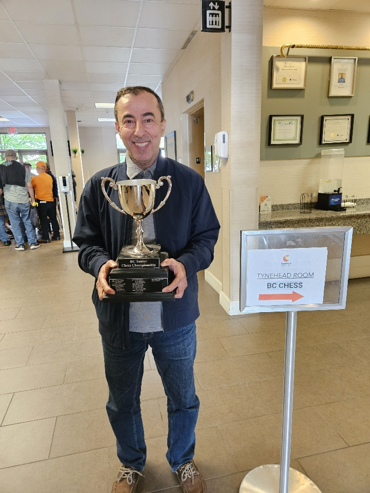

Track Record
Provincial senior champion in 2018, 2019, 2022, 2023 and 2026 — one of the most decorated senior records in recent BC chess history.

Full Record
Represented Iraq at the Junior International Chess Championship in 1982, finishing in the top 10 and showing his early talent on the international stage.
Competed at the Doha International Chess Tournament in 1989 against a diverse international field, finishing in the top 5.
Took first place at the Arab Chess Championship held in Yemen in 2001, against top players from across the region.
Finished in 2nd place at the 2018 Canadian Senior Championship.
Reached a peak FIDE rating of 2296 and holds the FIDE title of Candidate Master.
Secured a memorable draw against Grandmaster Elmar Magerramov at an international tournament, showing he can compete at the highest level.
1:1 and group coaching in downtown Vancouver at $35 per hour.